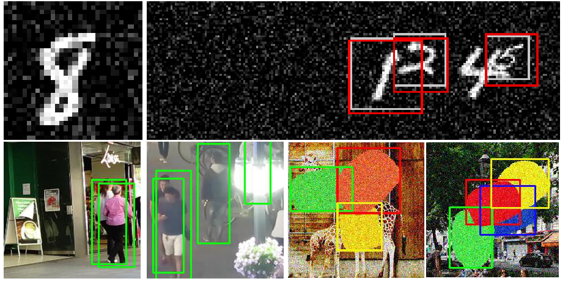
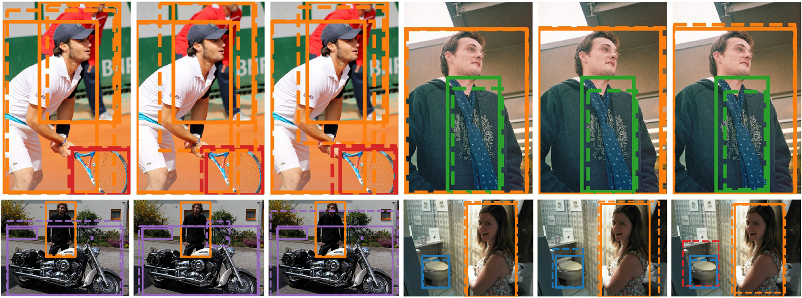
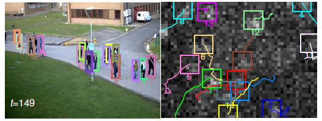
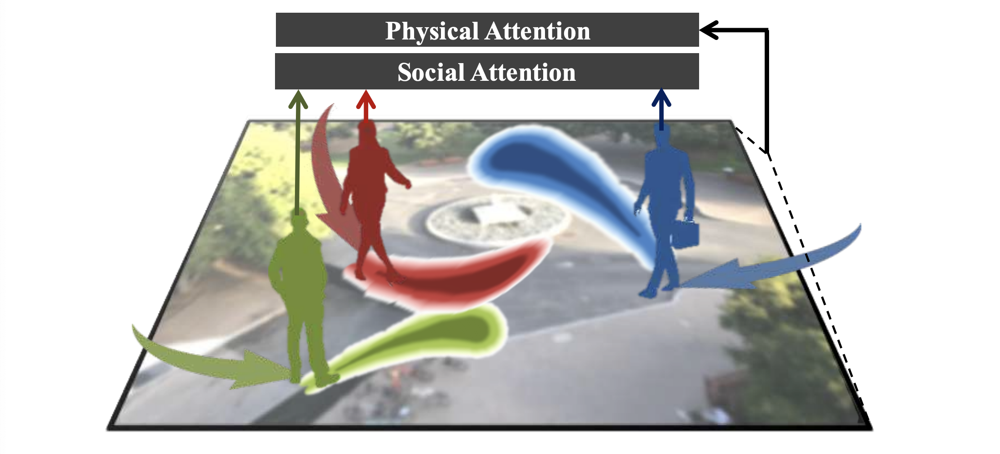

Predicting Sets with Deep Neural Networks

Generalized Intersection over Union: A Metric and A Loss for Bounding Box Regression

Joint probabilistic data association revisited

A Real-Time 3D Multi-Object Tracker and a New Large-Scale Dataset
